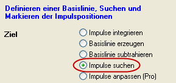
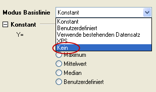
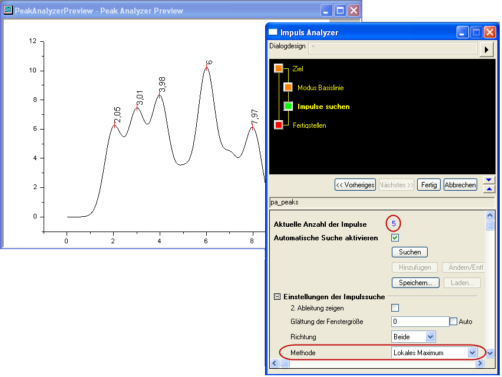
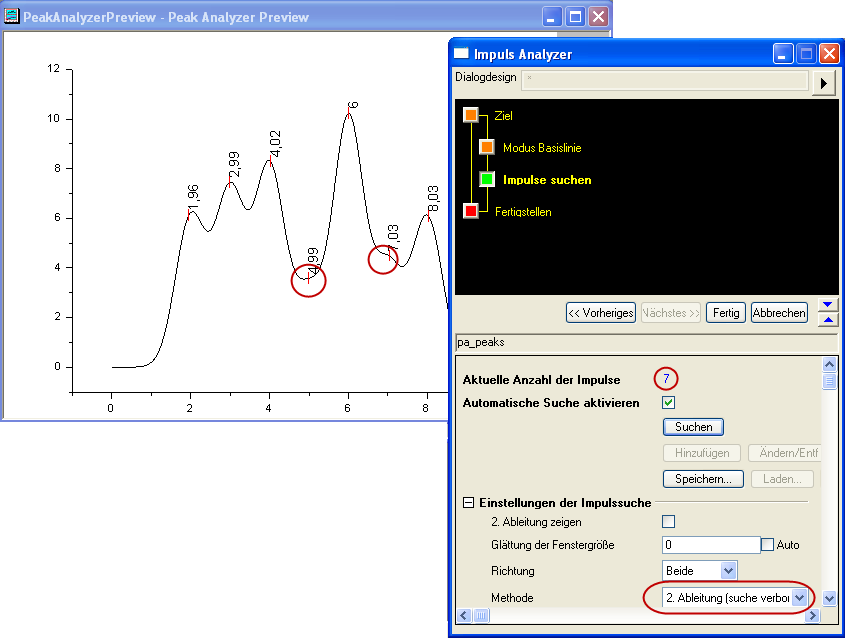
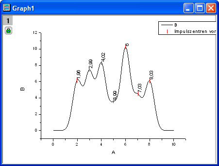

Auswählen und Markieren von Impulsen
Zusammenfassung
Der Impulsanalysator bietet mehrere Methoden, um Impulse automatisch auszuwählen. Anwender können Impulse auch manuell hinzufügen/löschen/modifizieren.
Beschriftungen werden zu den Impulszentren hinzugefügt, nachdem sie gefunden oder hingefügt wurden, um Anwendern die Positionen der momentanen Impulse zu zeigen.
Origin-Version mind. erforderlich: 8.0 SR6
Was Sie lernen werden
- Verwenden der automatischen Impulssuche im Impulsanalysator und ihre benutzerdefinierte Anpassung
- Benutzerdefiniertes Anpassen der Beschriftungen für die Impulszentren
Schritte
- Öffnen Sie eine neue Arbeitsmappe und importieren Sie die Datei <Origin Program Folder>\Samples\Spectroscopy\HiddenPeaks.dat.
- Markieren Sie die zweite Spalte.
- Erstellen Sie ein Liniendiagramm, indem Sie Zeichnen: Linie: Liniendiagramm wählen.
- Wählen Sie dann Analyse: Impulse und Basislinie: Basislinie und Peaks, um das Dialogfeld des Impulsanalysators (Peakanalysator) zu öffnen.
- Wählen Sie auf der ersten Seite (der Startseite) das Optionsfeld Impulse suchen in der Gruppe Ziel. Klicken Sie auf die Schaltfläche Nächstes, um zur nächsten Seite zu gelangen.
- 
- Wählen Sie auf der Seite Modus Basislinie die Option Keine für Modus Basislinie.
- 
- Klicken Sie auf die Schaltfläche Nächstes, um zur Seite Impulse suchen zu gelangen.
- Auf der Seite Impulse suchen:
- Erweitern Sie den Zweig Einstellungen der Impulssuche. Stellen Sie sicher, dass Lokales Maximum für Methode ausgewählt ist. Klicken Sie auf die Schaltfläche Suchen. Es werden nur fünf Impulse erkannt.
- 
- Ändern Sie Methode auf Zeige zweite Ableitung (Suche nach verborgenen Impulsen). Klicken Sie wieder auf die Schaltfläche Suchen. Dieses Mal werden sieben Impulse erkannt.
- 
- Klicken Sie auf Fertig, um die Analyse zu beenden. Das endgültige Diagramm sieht folgendermaßen aus:
- 